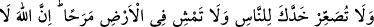
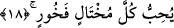
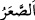
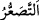

Babası şu karşılığı verdi: “Benim ağlamamın sebebi şudur: Dünyâdan aldığım haz ve
mutluluğu senin uğruna feda ettiğim için beni sevdiniz. Ben babayım ve babaların
evlâtlarına olan sevgi ve şefkatleri malumdur. Ama “Bunda ne hayır var?” sözüne
gelince. Senden uzaklaştırılan belânın, şimdi senin başına gelen belâdan daha büyük
olmadığını nereden bileceksin? Muhtemeldir ki şimdi başına gelen belâ senden
uzaklaştırılan belâdan daha hafiftir.
Onlar böyle konuşurken Lokman ileriye baktı. O karaltı ve dumandan hiçbir şey
görmedi. Kendi kendine dedi ki: “Ben orada bir şey görüyordum, şimdi göremiyorum;
bilmiyorum o neydi?” Birden ata binmiş, beyaz elbiseli bir adamın gelmekte olduğunu
gördü.
Adam, “Lokman sen misin?” diye seslendi. Lokman, “Evet” diye karşılık verdi.
Adam, “Hakîm/bilge sen misin?” diye sordu. Lokman, “Öyle diyorlar” dedi. Adam, “O
akılsız çocuk ne dedi?” diye sordu ve ekledi: “Eğer o belâ ona ulaşmasaydı, sizin ikiniz
de başkaları gibi yerin altına gidecektiniz.”
Lokman oğluna baktı ve “Kulun başına hayır ve şer ne gelirse, hayır ve iyiliğin onda
olduğunu anlayıp bildin mi?” dedi. Sonra ikisi de kalkıp gittiler.
Bu sebeptendir ki Ömer b. Hattâb (r.a.) şöyle dedi: Ben sabahleyin kalktığımda, ne
halde olursa olsun başıma gelen hayır ya da şer dolayısıyla endişe duymam. Çünkü
benim için hangisinde hayır olduğunu bilmem.”
Mûsâ (a.s.): “Ey Rabbim, kulların arasında en büyük günahı işleyen kimdir?” diye
münâcâtta bulundu. Hak Teâlâ’dan şu hitap geldi: “Beni töhmet altında bırakandır.”
Mûsâ (a.s.): “Ey Rabbim, seni itham eden kimdir?” diye sordu.
Hak Teâlâ şöyle buyurdu: “İyilik talep edip benden kendisi için en iyisini isteyip de
hükmüme râzı olmayan kimse.”
Sâib der ki:
Servi gibi rızâ makamında dimdik durmuşum.
Bu sebepten baharımdan da hazanımdan da gönlüm rahattır.
18. Küçümseyerek insanlardan yüz çevirme ve yeryüzünde böbürlenerek
yürüme. Zîra Allah, kendini beğenmiş övünüp duran kimseleri asla sevmez.
“Küçümseyerek insanlardan yüz çevirme” “
” insanda ve devede yaratılıştan,
hastalıktan veya yaşlılıktan dolayı boynun bir tarafa eğilmesidir. “
” ise
böbürlenerek yüzünü öteye çevirmektir. Nitekim Tâcü’l-masâdır’da “
” kibirden